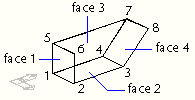
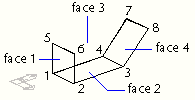

|
AddPolyfaceMesh Method |
Creates a polyface mesh from a list of vertices.
Signature
RetVal = object.AddPolyfaceMesh(VerticesList, FaceList)
Object
ModelSpace Collection, PaperSpace Collection, Block
The objects this method applies to.
VerticesList
Variant (array of doubles); input-only
An array of 3D WCS coordinates used to create the polyface mesh vertices. At least four points (twelve elements) are required for constructing a polyface mesh object. The array size must be a multiple of three.
FaceList
Variant (array of Integers); input-only
An array of integers representing the vertex numbers for each face. Faces are defined in groups of four vertex index values, so the size of this array must be a multiple of four.
RetVal
PolyfaceMesh object
The newly created PolyfaceMesh object.
Remarks
Creating a polyface mesh is similar to creating a rectangular mesh. To create a polyface mesh, you specify the coordinates for its vertices and the vertex numbers for all the vertices of that face.
In the following illustration, face 1 is defined by vertices 1, 5, 6, and 2. Face 2 is defined by vertices 1, 4, 3, and 2. Face 3 is defined by vertices 1, 4, 7, and 5, and face 4 is defined by vertices 3, 4, 7, and 8.

To make an edge invisible, enter the vertex number for the edge as a negative value. For instance, to make the edge between vertices 5 and 7 invisible in the following illustration, you would set the following:
Face 3, vertex 3: -7

| Comments? |